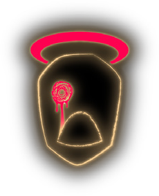
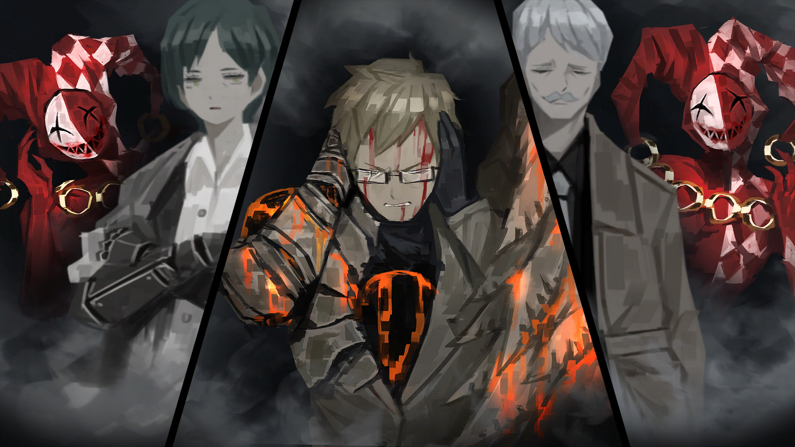
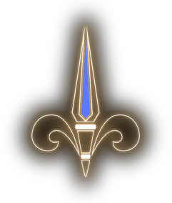
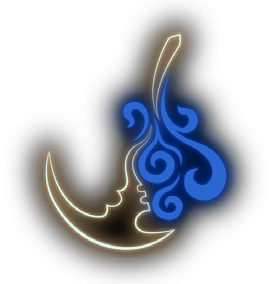
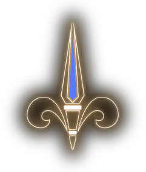
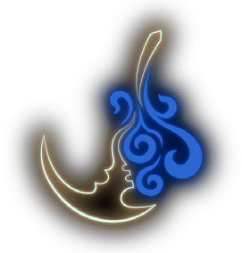

Historia
Philip inicialmente aparece como um aprendiz do Dawn Office, Ele, junto com seu mentor Salvador e seu interesse amoroso Yuna entra dentro da Biblioteca para recuperar o livro de Walter. Antes de sairem, Salvador dá a ideia de celebrar quando eles retornarem, o que faz Philip suspeitar que Salvador e Yuna estavam saindo juntos em segredo, o que piora o estado emocional dele. Durante a recepção do Dawn Office, por algum motivo, Philip escapa da Biblioteca como o único sobrevivente. E por conta disso, ele corre até o Wedge Office, o grupo irmã do Dawn Office, para pedir ajuda para recuperar os livros de Salvador e Yuna, mas o Wedge é derrotado também. Philip se resolve aceitando sua covardice e sua dor, recebendo um E.G.O como resultado. Logo antes de Philip ser tornado um livro (morrer), ele de repente some, o que faz Roland suspeitar que o operador do Wedge Office, Oscar, tenha implantado um teletransportador em Philip.Philip é transportado para a entrada do Circo das Oito-Horas, encontrando Oswald, em uma tentativa de consegui uma vingança pro Wedge Office, ele tenta matar-lo, mas Oswald esquiva de seus ataque e o zomba. Vendo seu E.G.O enfraquecer pelo seu sentimento de inferioridade, ele decide corromper-lo para virar uma Distorção, Oswald tortura Philip usando halucinações de seus companheiros mortos. Estressado e prestes a chorar, a visão de Philip escurece enquanto Pluto aparece em sua frente, dizendo que pode dar-lo a força de matar Oswald ou conseguir vingança na Biblioteca. Assinando um contrato com ele, Philip pede para que ele possa chorar, simplesmente por "ouvir a voz", transformando-o em uma Distorção chamada As Crianças que Choram.

Oswald quebra a mente de Philip usando halucinações de seus companheiros mortos por sua covardice
A Distorção foi enviada para a biblioteca por Pluto, e todas partes excluindo uma foram mortas, e a parte que sobreviveu se reergueu e destruiu uma boa parte do ninho do V-Corp, deixando apenas a construção do Dawn Office em pé, e após ser procurado pela Associação Liu, o Conjunto da Reverberação o contratou como seu "Cello".
Depois que a maioria dos competitores pela Biblioteca são enfraquecidos ou mortos, Philip e o resto do Conjunto invadem a biblioteca para roubar a Luz para si mesmos, Philip entra no Andar de História, onde ele conta para Malkuth que ele não lembra mais a pessoa que ele era, e que quer um mundo onde ninguém tenha que ser melhor para os fins dos outros, antes de ser transformado em um livro. Mas quando o Conjunto é revivido e distorcido ainda mais (aba Distorcido) por Angela ter liberado a luz, ele morre de verdade após a batalha com Roland, finalmente recebendo seu descanso.
Philip

Afiliações

Dawn Office

Wedge Office
As Crianças Chorando

O Conjunto da Reverberação
Afiliações
Dawn Office

Wedge Office
As Crianças Chorando

O Conjunto da Reverberação